Statistical Modelling of bird and cetacean distributions in offshore renewables development areas
LAS Scott-Hayward, CG Walker and ML Mackenzie
2023-01-30
Source:vignettes/web/RenewablesCaseStudy_MRSea_v1.3.Rmd
RenewablesCaseStudy_MRSea_v1.3.RmdThis vignette constitutes work carried out at the Centre for Research into Ecological and Environmental Modelling (CREEM) at the University of St. Andrews.
Please reference this document as: Scott-Hayward, L.A.S., Mackenzie, M.L. and Walker, C.G. (2021). Vignette for the MRSea Package v1.3: Statistical Modelling of bird and cetacean distributions in offshore renewables development areas. Centre for Research into Ecological and Environmental Modelling, University of St Andrews.
Introduction
The MRSea package was developed for analysing data that
was collected for assessing potential impacts of renewable developments
on marine wildlife, although the methods are applicable to other studies
as well. This vignette gives an updated example of the code for version
1.3. For additional information regarding methods, see Mackenzie et al. (2013) and Scott-Hayward, Oedekoven, et al. (2013). The
user should be familiar with generalised linear models and their
assumptions and model selection. The MRSea package
primarily allows spatially adaptive model selection for both one and two
dimensional covariates using the functions runSALSA1D and
runSALSA2D, which implement the methods of Walker et al. (2010), Scott-Hayward, Mackenzie, et al. (2013) and
Scott-Hayward et al. (2022).
The major update to this package (from version 0 to version 1)is that
a class of model gamMRSea is created when running either
SALSA 1D or 2D. This retains within the model object information
regarding fitting, such as the splineParam object and the
panel structure (if present). The use of the summary
function on these models returns both raw and robust standard errors,
with the p-values from the models hypothesis test using the
robust standard errors. The robust standard errors are obtained using
the panel structure given (independence is one panel per data point and
is the default if no structure is given).
Other functions include diagnostics (to assess residual correlation:
runACF, smooth relationships: runPartialPlots
and model selection (ANOVA) for robust standard errors:
anova.gamMRSea) and inference
(do.bootstrap.cress).
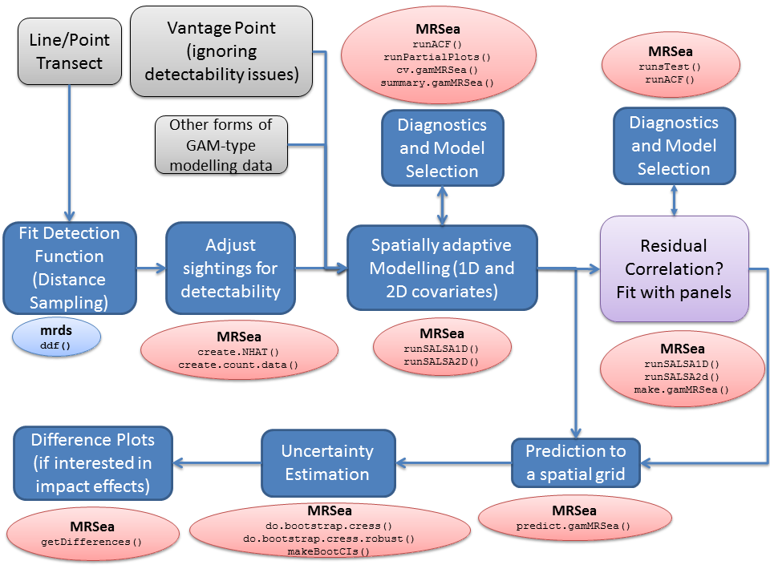 Example of the modelling process using MRSea. Packages with functions to run certain parts are given in oval boxes. To complete the modelling process, other packages may be used at certain stages. These are coded light blue, whilst MRSea functions are in red.
Distance sampling using the mrds library
- Load data and fit detection function (Distance Sampling)
#devtools::load_all(path='../../MRSea/')
require(MRSea)
# we will use the dataset with a known re-distribution of animals
data(dis.data.re)
dis.data<-dis.data.re
require(mrds) # distance sampling package
result <- ddf(dsmodel=~mcds(key="hn", formula=~1),
data = dis.data, method="ds",
meta.data=list(width=250))
result
#>
#> Distance sampling analysis object
#>
#> Summary for ds object
#> Number of observations : 2373
#> Distance range : 0 - 250
#> AIC : 25446.68
#>
#> Detection function:
#> Half-normal key function
#>
#> Detection function parameters
#> Scale coefficient(s):
#> estimate se
#> (Intercept) 4.754715 0.02068035
#>
#> Estimate SE CV
#> Average p 0.5639473 0.009624525 0.01706636
#> N in covered region 4207.8400478 91.709328911 0.02179487
plot(result)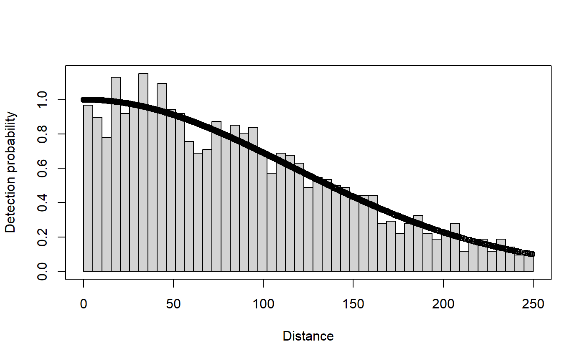
- Adjust sightings for detectability
# create.NHAT and create.count.data are MRSea functions to adjust the
# sightings for the detection function estimated above.
dis.data <- create.NHAT(dis.data,result)
count.data <- create.count.data(dis.data)- Try a simple model
count.data$response <- round(count.data$NHAT)
fullModel <- glm(response ~ as.factor(season) + as.factor(impact) +
depth + x.pos + y.pos, family = poisson, data = count.data)- Try a model with a smooth term for depth
require(splines)
fullModel <- glm(response ~ as.factor(season) + as.factor(impact) +
bs(depth, knots = mean(depth)) + x.pos + y.pos,
family = poisson,data = count.data)- If the data are correlated then you may wish to specify a blocking structure in your dataset.
For correlated data:
count.data$blockid <- paste(count.data$transect.id,
count.data$season,
count.data$impact,sep = "")Selection of 1D Covariates
Run SALSA1D to select what covariates are included and whether or not
they are smooth. SALSA selects the smoothness of each term (number and
location of knots) and 10-fold CV is used to choose between the best
smooth term, a linear term or no term at all. To not allow the removal
process the user may set removal = FALSE as a parameter in
the function runSALSA1D.
- If you wish to make predictions once the model is fitted, then a prediction grid should be created and specified. This is because the splines fitted here (B-splines) are unable to make predictions outside of the range they were created. For example, if the data range for depth is smaller than the range of depths in the prediction data, predictions cannot be made.
data("nysted.predictdata") # contains predict.data
# This is a spatial grid for making predictions. All covariates in
# final model must be in this data frame and the naming must be the
# same as for the data
predictData <- nysted.predictdata
range(count.data$depth)
#> [1] -28.608 -0.411
range(predictData$depth)
#> [1] -28.608 -0.200Here the range of the predictions is slightly wider than the range of
the data, so we will specify predictData when running
SALSA.
- Set up the initial model with factor covariates and the offset term (if required) and specify the parameters required:
initialModel <- glm(response ~ as.factor(season) + as.factor(impact)
+ offset(log(area)), family = "quasipoisson",
data = count.data)The fitness measure can be one of several options (AIC, BIC, QAIC, QBIC, CV). Here we use QBIC.
salsa1dlist <- list(fitnessMeasure = "QBIC",
minKnots_1d = 2,
maxKnots_1d = 5,
startKnots_1d = 1,
degree = 2,
gaps = c(0))If you want to use CV, you will need an additional parameter in the
list; cv.opts
salsa1dlist <- list(fitnessMeasure = "cv.gamMRSea",
minKnots_1d = 2,
maxKnots_1d = 3,
startKnots_1d = 1,
degree = 2,
gaps = c(0),
cv.opts=list(cv.gamMRSea.seed=1, K=10))- Run SALSA;
# run SALSA
require(MuMIn)
salsa1dOutput <- runSALSA1D(initialModel, salsa1dlist, c("depth"),
predictionData=predictData, datain=count.data, removal=TRUE)Use the built in summary function (summary.gamMRSea) to
look at the summary of the model. Note that robust standard errors are
given alongside the raw standard errors and information regarding panels
is at the bottom of the output. If each data point is a panel, then
independence is assumed.
summary(salsa1dOutput$bestModel)
#>
#> Call:
#> gamMRSea(formula = response ~ as.factor(season) + as.factor(impact) +
#> bs(depth, knots = splineParams[[2]]$knots, degree = splineParams[[2]]$degree,
#> Boundary.knots = splineParams[[2]]$bd) + offset(log(area)),
#> family = quasipoisson(link = log), data = count.data, splineParams = splineParams)
#>
#> Deviance Residuals:
#> Min 1Q Median 3Q Max
#> -2.3225 -1.1095 -0.4331 -0.1030 19.3191
#>
#> Coefficients:
#> Estimate Std. Error Robust S.E. t value Pr(>|t|)
#> (Intercept) -5.13066 3.68069 3.68069 -1.394 0.16337
#> as.factor(season)2 -1.23880 0.13894 0.13894 -8.916 < 2e-16 ***
#> as.factor(season)3 -1.20226 0.13699 0.13699 -8.776 < 2e-16 ***
#> as.factor(season)4 -0.85625 0.12060 0.12060 -7.100 1.34e-12 ***
#> as.factor(impact)1 -0.07542 0.09285 0.09285 -0.812 0.41663
#> s(depth)1 0.86857 3.91831 3.91831 0.222 0.82458
#> s(depth)2 9.95179 3.61327 3.61327 2.754 0.00589 **
#> s(depth)3 4.65379 3.73616 3.73616 1.246 0.21294
#> ---
#> Signif. codes: 0 '***' 0.001 '**' 0.01 '*' 0.05 '.' 0.1 ' ' 1
#>
#> (Dispersion parameter for quasipoisson family taken to be 9.249465)
#>
#> Null deviance: 26054 on 9231 degrees of freedom
#> Residual deviance: 19372 on 9224 degrees of freedom
#> AIC: NA
#>
#> Max Panel Size = 1 (independence assumed); Number of panels = 9232
#> Number of Fisher Scoring iterations: 7
# How many knots were chosen for depth?
salsa1dOutput$splineParams[[2]]$knots
#> NULL
# ~~~~~~~~~~~~~~~~~~~~~~~Selection of flexibility for 2D smooth term
- Create a grid of knots that will be used as possible knot locations. This may take while and could be different every time you run it so I suggest saving the knotgrid as a file.
knotgrid<- getKnotgrid(coordData = cbind(count.data$x.pos, count.data$y.pos),
numKnots = 300,
plot = FALSE)
#
# write.csv(knotgrid, file='knotgrid_fullanalysis.csv', row.names=F)
# ~~~~~~~~~~~~~~~~~~~~~~~- Set up parameters for SALSA2D. Distance matrices (data to knots and knot to knots), a fit statistic and min, max and start knots.
# make distance matrices for datatoknots and knottoknots
distMats <- makeDists(cbind(count.data$x.pos, count.data$y.pos), knotgrid)
# ~~~~~~~~~~~~~~~~~~~~~~~
# make parameter set for running salsa2d
salsa2dlist<-list(fitnessMeasure = 'QBIC',
knotgrid = knotgrid,
startKnots=10,
minKnots=4,
maxKnots=15,
gap=0,
interactionTerm="as.factor(impact)")- Run SALSA2D to find the appropriate number and location of knots for
the 2D smooth term of
x.posandy.pos. The model inputted to the SALSA algorithm is the model output from the 1D SALSA run. If you have no univariate smooth terms, you can put in the initial model in this step.
salsa2dOutput<-runSALSA2D(model = salsa1dOutput$bestModel,
salsa2dlist = salsa2dlist,
d2k=distMats$dataDist,
k2k=distMats$knotDist)
require(ggplot2)
ggplot() + geom_point(data=count.data, aes(x=x.pos, y=y.pos), colour='grey') +
theme_bw() +
geom_point(data=data.frame(knotgrid), aes(X1, X2), col='blue') +
geom_point(data=data.frame(knotgrid)[salsa2dOutput$aR[[1]],],
aes(X1, X2), col='darkgreen', size=4) +
coord_equal()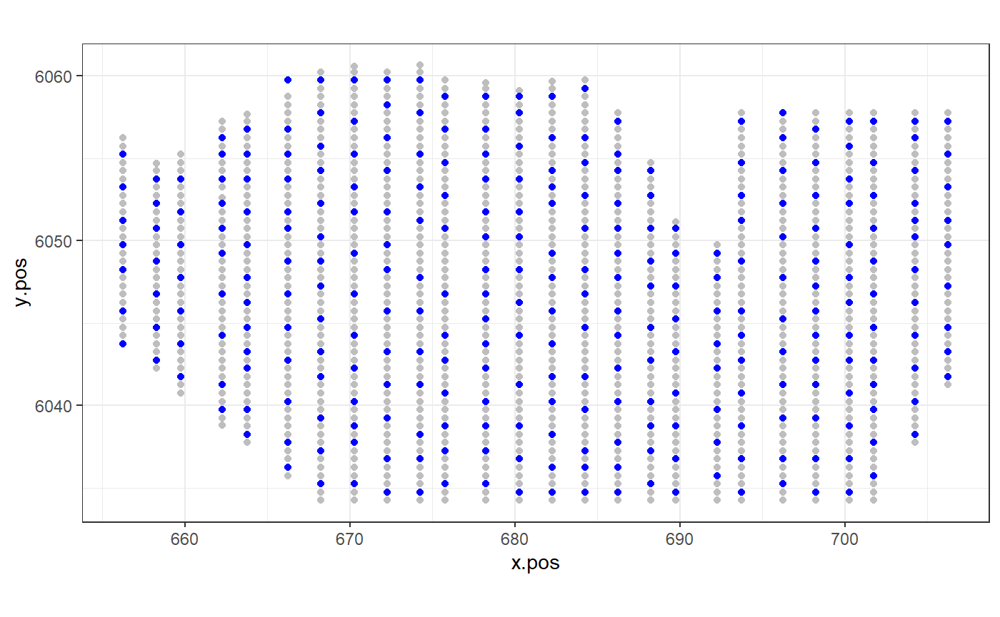
- Are the residuals correlated? Make a suitable blocking structure,
within which residuals are expected to be correlated but between which
they are independent. Use
runACFto assess the blocking structure.
runACF(block = count.data$blockid, model = salsa2dOutput$bestModel,
suppress.printout=TRUE)ACF plot showing correlation in each block (grey lines), and the mean correlation by lag across blocks (red line).
Here we also do a runs test to assess for correlation in the model residuals. Since our data are over-dispersed, we must use the empirical distribution for assessment:
simData<-generateNoise(n=500, response=fitted(salsa2dOutput$bestModel), family='poisson', d=summary(salsa2dOutput$bestModel)$dispersion)
empdist<-getEmpDistribution(500, simData, salsa2dOutput$bestModel, data=count.data,dots=FALSE)
runsTest(residuals(salsa2dOutput$bestModel, type='pearson'),emp.distribution=empdist)
#>
#> Runs Test - Two sided; Empirical Distribution
#>
#> data: residuals(salsa2dOutput$bestModel, type = "pearson")
#> Standardized Runs Statistic = -67.57, p-value < 2.2e-16- Model selection
set.seed(1)
# 2D model
cv.gamMRSea(data=count.data, modelobject = salsa2dOutput$bestModel, K=10)$delta[2]
#> [1] 5.734568
# salsa2dOutput$fitStat # alternatively
# 1D model
cv.gamMRSea(data=count.data, modelobject = salsa1dOutput$bestModel, K=10)$delta[2]
#> [1] 6.11639
# intitial model
cv.gamMRSea(data=count.data, modelobject = initialModel, K=10)$delta[2]
#> [1] 6.443183
anova(salsa2dOutput$bestModel)
#> Analysis of 'Wald statistic' Table
#> Model: quasipoisson, link: log
#> Response: response
#> Marginal Testing
#> Max Panel Size = 1 (independence assumed); Number of panels = 9232
#>
#> Df X2 P(>|Chi|)
#> as.factor(season) 3 199.57 < 2.2e-16 ***
#> as.factor(impact) 1 11.42 0.0007276 ***
#> s(depth) 3 326.63 < 2.2e-16 ***
#> s(x.pos, y.pos) 4 160.93 < 2.2e-16 ***
#> s(x.pos, y.pos):as.factor(impact) 4 34.43 6.094e-07 ***
#> ---
#> Signif. codes: 0 '***' 0.001 '**' 0.01 '*' 0.05 '.' 0.1 ' ' 1
par(mfrow=c(2,2))
runPartialPlots(model = salsa2dOutput$bestModel, data = count.data,
factorlist.in = c('season', 'impact'),
varlist.in = 'depth', showKnots = T,
includeB0 = TRUE)
#> [1] "Making partial plots"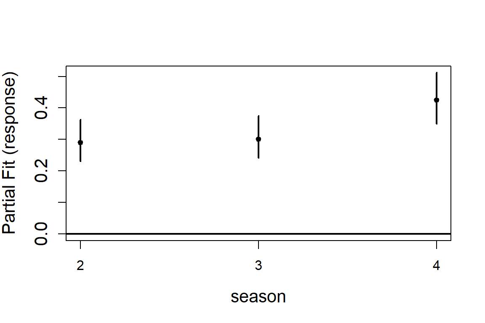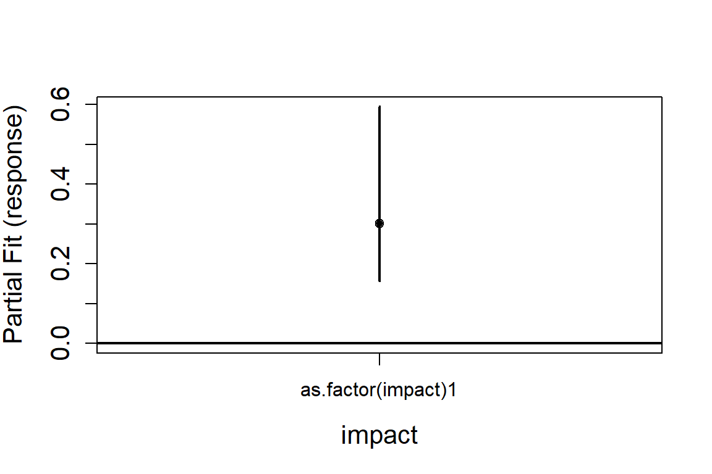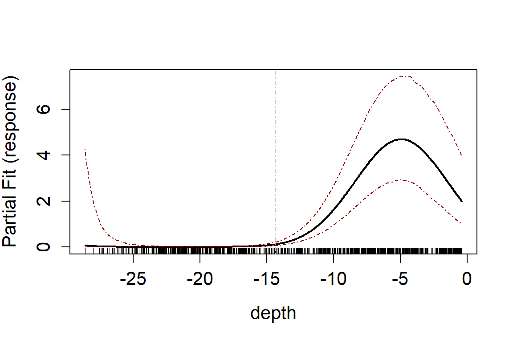
par(mfrow=c(2,2))
runPartialPlots(model = salsa2dOutput$bestModel, data = count.data,
factorlist = c('season', 'impact'), varlist = 'depth',
showKnots = T, type='link',
includeB0 = TRUE)
#> [1] "Making partial plots" 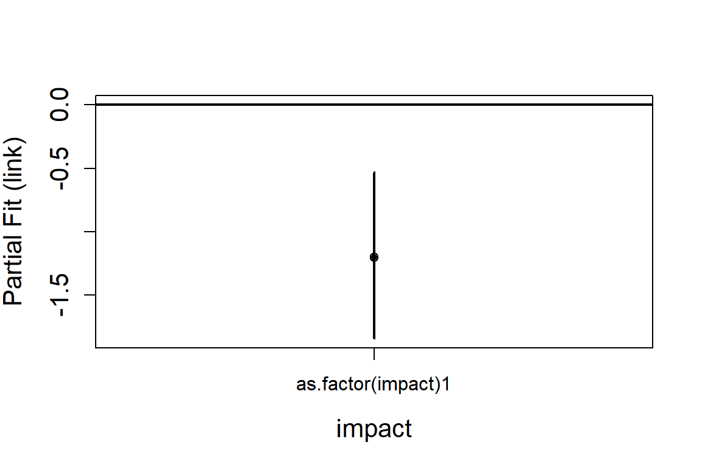
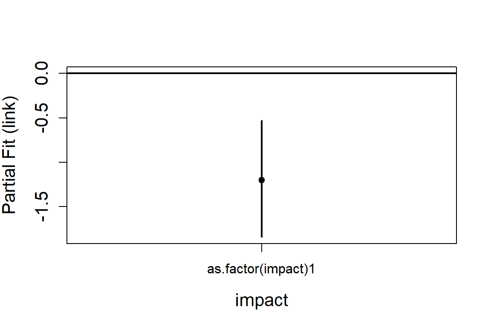
Making Predictions
preddist<-makeDists(cbind(predictData$x.pos, predictData$y.pos),
knotgrid, knotmat=FALSE)$dataDist
# make predictions on response scale
preds<-predict(newdata = predictData,
g2k = preddist,
object = salsa2dOutput$bestModel)Plotting the predictions pre and post impact:
require(RColorBrewer)
imp.labs <- c("Pre-Construction", "Post-Construction")
names(imp.labs) <- c("0", "1")
predictData$preds<-preds[,1]
ggplot() +
geom_tile(data=predictData, aes(x.pos, y.pos, fill=preds), height=0.5, width=0.5) +
facet_grid(season~impact , labeller = labeller(impact=imp.labs)) +
theme_bw() + coord_equal() +
scale_fill_distiller(palette = "Spectral",name="Animal Counts")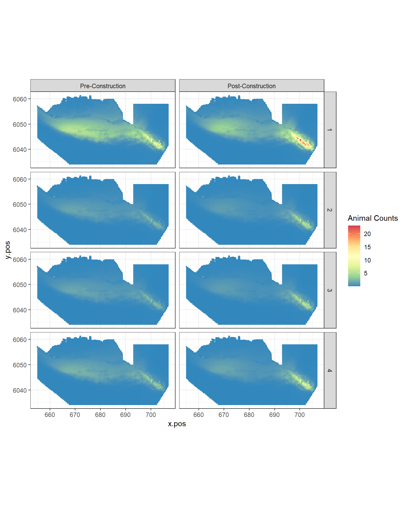
Bootstrapped Confidence Intervals and Difference Surfaces
Note that the coding in this section has changed slightly from the original user guide.
- Bootstrap to include parameter estimation uncertainty in the detection function and parameter estimation in the spatial model. (Note: If no detection function estimated, then the bootstrap is just on the parameters of the spatial model.)
dis.data$seasonimpact <- paste(dis.data$season, dis.data$impact)
bootPreds<-do.bootstrap.cress.robust(model.obj = salsa2dOutput$bestModel,
predictionGrid = predictData,
g2k=preddist,
B = 100,
robust=TRUE)
#load('predictionboot.RData')
cis <- makeBootCIs(bootPreds)- Calculate the differences before and after across all bootstraps
differences <- getDifferences(beforePreds =
bootPreds[predictData$impact == 0, ],
afterPreds = bootPreds[predictData$impact == 1, ])- Plot differences and indicate where significant positive/negative differences lie. The grey circles indicate a significant negative difference (abundance after impact is less than the abundance before impact) and the grey crosses indicate a significant positive difference. The colour of the cell indicates the size of the difference.
mediandiff <- differences$mediandiff
# The marker for each after - before difference:
# positive ('1') and negative ('-') significant differences
marker <- differences$significanceMarker
par(mfrow = c(1, 1))
quilt.plot(predictData$x.pos[predictData$impact == 0],
predictData$y.pos[predictData$impact == 0],
mediandiff, asp = 1, nrow = 104, ncol = 55)
# add + or - depending on significance of cells. Just
# requires one significance out of all to be allocated
points(predictData$x.pos[predictData$impact == 0][marker == 1],
predictData$y.pos[predictData$impact == 0][marker == 1],
pch = "+", col = "darkgrey", cex = 0.75)
points(predictData$x.pos[predictData$impact == 0][marker == (-1)],
predictData$y.pos[predictData$impact == 0][marker == (-1)],
col = "darkgrey", cex = 0.75)
points(681417.3/1000, 6046910/1000, cex = 3, pch = "*", lwd = 1, col = "grey")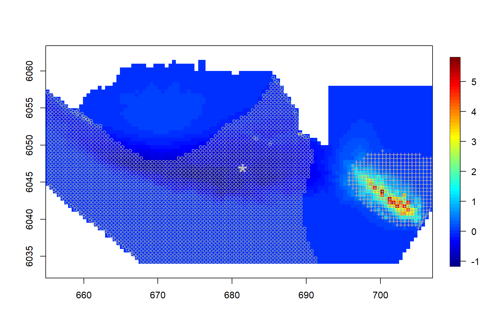
Select a single season to plot (here I have chosen season 1):
require(dplyr)
diffdata<-data.frame(predictData[predictData$impact==0,], mediandiff, marker)
diffdata_s1<-filter(diffdata, season==1)
wf<-data.frame(x=(681417.3/1000), y= (6046910/1000))
ggplot() + geom_tile(data=diffdata_s1, aes(x=x.pos, y=y.pos, fill=mediandiff),
height=0.5, width=0.5) +
geom_point(data=filter(diffdata_s1, marker == 1), aes(x=x.pos, y=y.pos),
shape=3, colour='darkgrey', size=1) +
geom_point(data=filter(diffdata_s1, marker == -1), aes(x=x.pos, y=y.pos),
shape=1, colour='darkgrey', size=1.5) +
theme_bw() + coord_equal() +
scale_fill_distiller(palette = "Spectral",name="Difference") +
geom_point(data=wf, aes(x, y), shape=8, size=4)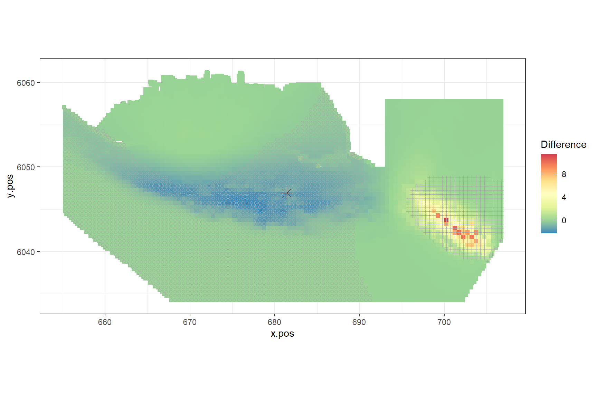
Or, all seasons (remember season is only in as a factor variable so there will be no change in spatial distribution between seasons, only an increase or decrease in numbers):
ggplot() + geom_tile(data=diffdata, aes(x=x.pos, y=y.pos, fill=mediandiff),
height=0.5, width=0.5) +
geom_point(data=filter(diffdata, marker == 1), aes(x=x.pos, y=y.pos),
shape=3, colour='darkgrey', size=1) +
geom_point(data=filter(diffdata, marker == -1), aes(x=x.pos, y=y.pos),
shape=1, colour='darkgrey', size=1.5) +
theme_bw() + coord_equal() + facet_wrap(~season) +
scale_fill_distiller(palette = "Spectral",name="Difference") +
geom_point(data=wf, aes(x, y), shape=8, size=4)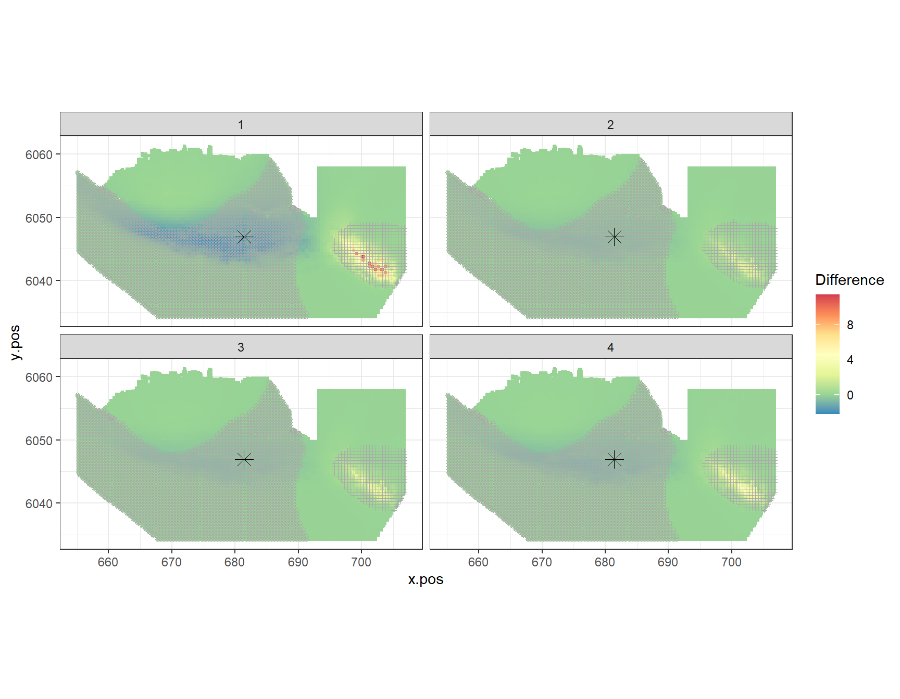
Diagnostic functions in the MRSea package
I will use the best model above to run some additional diagnostics.
finalmod<-salsa2dOutput$bestModelAutocorrelation check
These are already shown above so are not re-run here but included for completeness.
Autocorrelation function plot:
runACF(block = count.data$blockid, model = salsa2dOutput$bestModel,
suppress.printout=TRUE)Empirical runs test calculation:
simData<-generateNoise(n=500,
response=fitted(salsa2dOutput$bestModel),
family='poisson',
d=summary(salsa2dOutput$bestModel)$dispersion)
empdist<-getEmpDistribution(500, simData, salsa2dOutput$bestModel, data=count.data,dots=FALSE)
runDiagnostics
This function creates observed vs fitted and fitted vs scaled pearsons residual plots.
runDiagnostics(finalmod)
#> [1] "Assessing predictive power"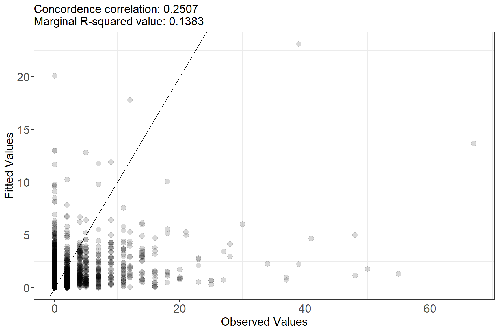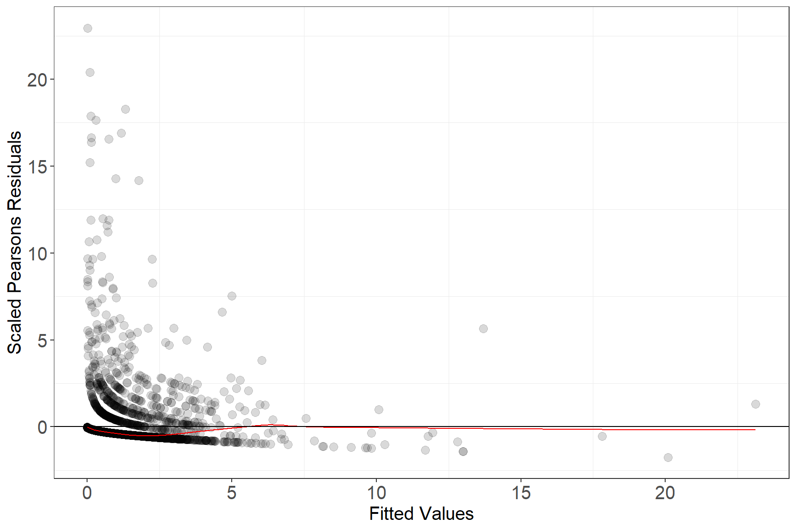
Influence diagnostics
These functions assess the influence of different blocks on the data.
timeInfluenceCheck(finalmod, id = count.data$blockid)
#> [1] "Calculating the influence measures will take approximately 2 minutes"
inflpoints<-runInfluence(finalmod, id = count.data$blockid)
#> [1] "Calculating COVRATIO and PRESS Statistics"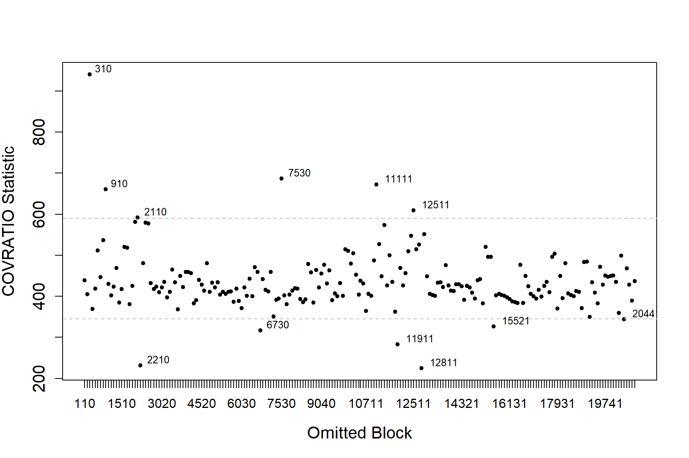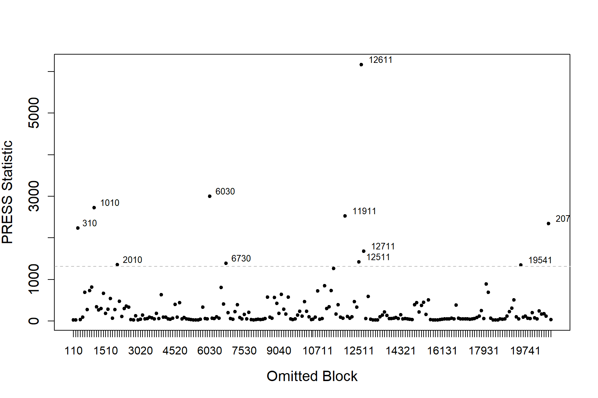
Cumulative residual plots
Cumulative residual plots are returned for residuals ordered by each
covariate in varlist, predicted value and index of
observations (temporally). The blue dots are the residuals and the black
line is the line of cumulative residual. On the covariate plots (those
in varlist) the grey line indicates what we would expect
from a well fitted covariate. i.e. one that is fitted with excessive
knots.
plotCumRes(model = finalmod, varlist = 'depth')
#> [1] "Calculating cumulative residuals"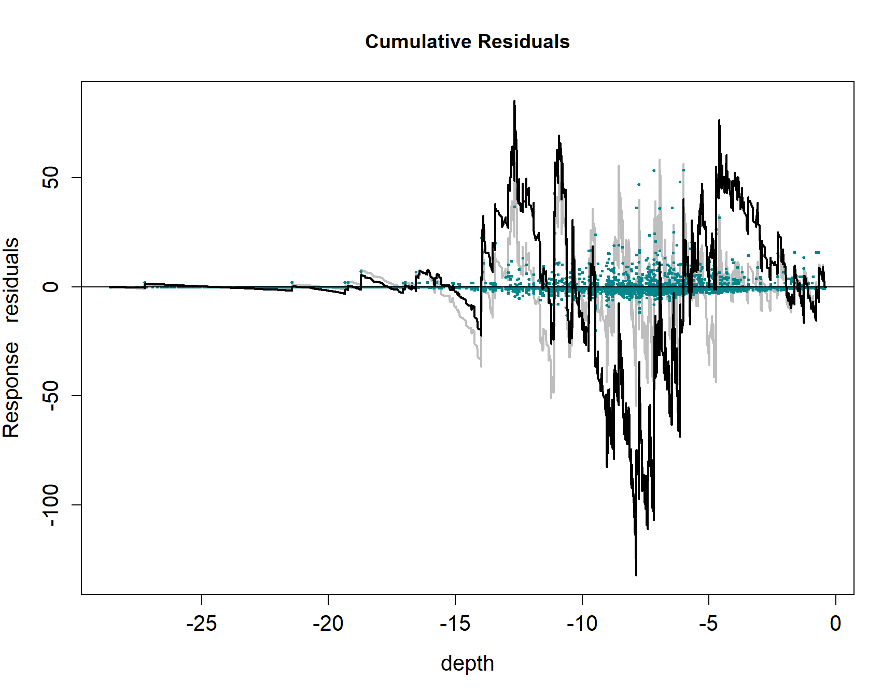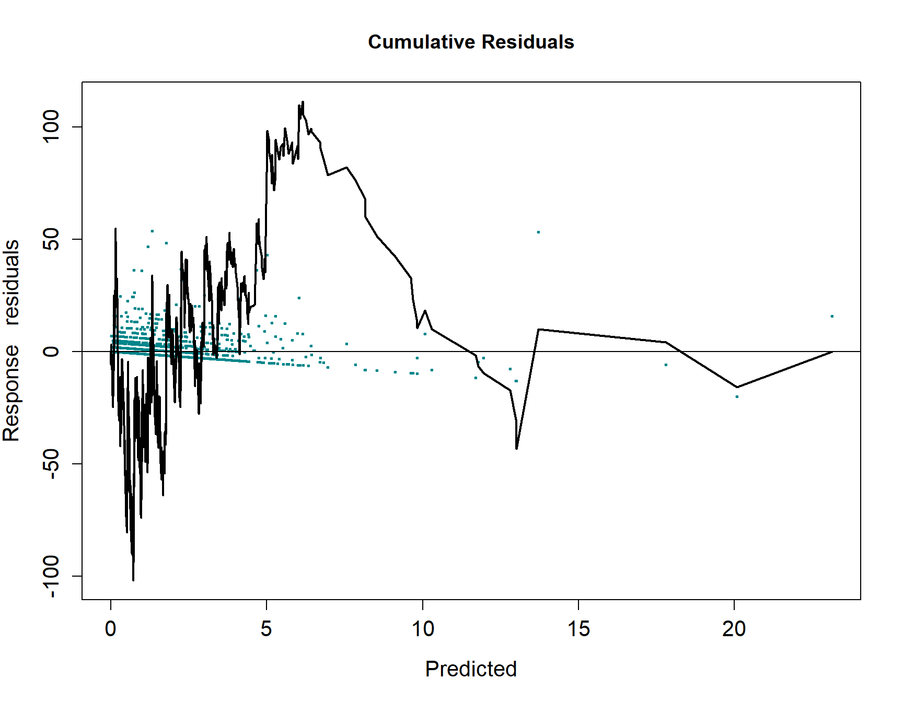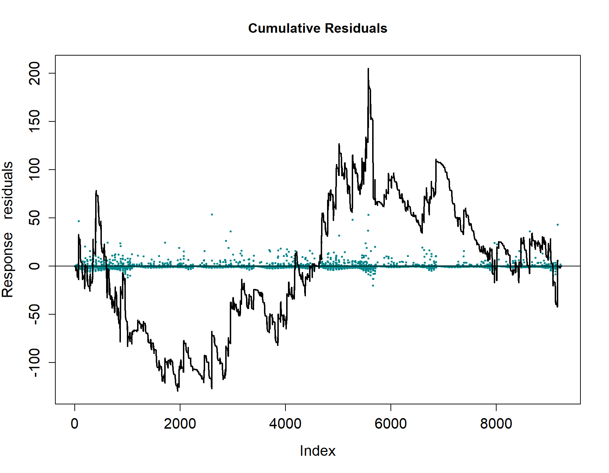
Mean-variance check
Not a function in MRSea but an essential component to model assessment is the mean variance relationship. In the plot below, the dots are the observed mean and variance for several bins of the fitted data. The red line is the assumed mean-variance relationship.
cutpts<-unique(quantile(fitted(finalmod), prob=seq(0,1, by=0.05)))
mycuts<-cut(fitted(finalmod), breaks= cutpts)
meanfits<-tapply(fitted(finalmod), mycuts, mean)
varresid<-tapply(residuals(finalmod, type='response'), mycuts, var)
plot(meanfits, varresid, xlab='Fitted Values', ylab='V(residuals)')
abline(0,1)
lines(meanfits, meanfits*summary(finalmod)$dispersion, col='red')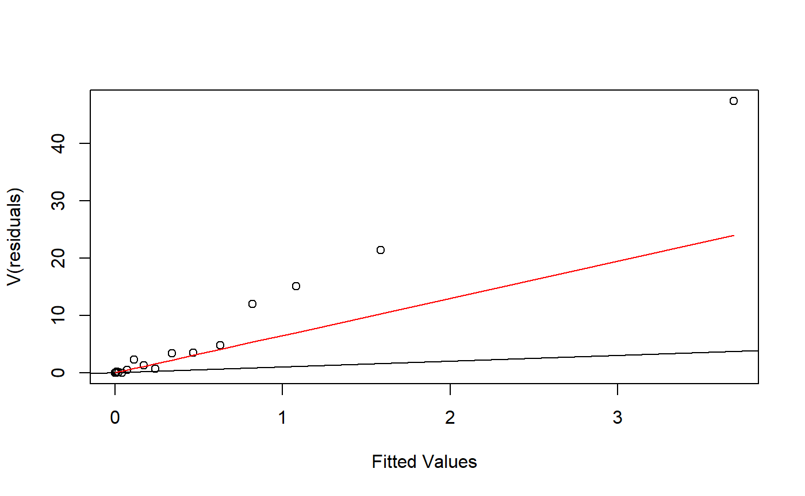
Other useful functions in the MRSea package
Making any glm model into an gamMRSea
object
This can be done using the make.gamMRSea function. Here
we use the fullmodel which is a glm model with
family='poisson'
fullModel$call
#> glm(formula = response ~ as.factor(season) + as.factor(impact) +
#> bs(depth, knots = mean(depth)) + x.pos + y.pos, family = poisson,
#> data = count.data)
fullModel.gamMRSea <- make.gamMRSea(fullModel,
gamMRSea = TRUE)
summary(fullModel.gamMRSea)
#>
#> Call:
#> gamMRSea(formula = response ~ as.factor(season) + as.factor(impact) +
#> bs(depth, knots = mean(depth)) + x.pos + y.pos, family = poisson,
#> data = count.data, splineParams = splineParams)
#>
#> Deviance Residuals:
#> Min 1Q Median 3Q Max
#> -4.1480 -0.9190 -0.3740 -0.0923 19.3475
#>
#> Coefficients:
#> Estimate Std. Error Robust S.E. z value
#> (Intercept) 1.212e+03 3.636e+01 3.636e+01 33.337
#> as.factor(season)2 -1.239e+00 4.568e-02 4.568e-02 -27.117
#> as.factor(season)3 -1.202e+00 4.504e-02 4.504e-02 -26.691
#> as.factor(season)4 -8.562e-01 3.966e-02 3.966e-02 -21.592
#> as.factor(impact)1 -7.542e-02 3.053e-02 3.053e-02 -2.470
#> bs(depth, knots = mean(depth))1 -4.505e+00 2.150e+00 2.150e+00 -2.095
#> bs(depth, knots = mean(depth))2 6.498e+00 1.681e+00 1.681e+00 3.865
#> bs(depth, knots = mean(depth))3 7.989e+00 1.847e+00 1.847e+00 4.325
#> bs(depth, knots = mean(depth))4 6.011e+00 1.787e+00 1.787e+00 3.363
#> x.pos 1.554e-02 1.571e-03 1.571e-03 9.892
#> y.pos -2.031e-01 5.993e-03 5.993e-03 -33.892
#> Pr(>|z|)
#> (Intercept) < 2e-16 ***
#> as.factor(season)2 < 2e-16 ***
#> as.factor(season)3 < 2e-16 ***
#> as.factor(season)4 < 2e-16 ***
#> as.factor(impact)1 0.013494 *
#> bs(depth, knots = mean(depth))1 0.036187 *
#> bs(depth, knots = mean(depth))2 0.000111 ***
#> bs(depth, knots = mean(depth))3 1.52e-05 ***
#> bs(depth, knots = mean(depth))4 0.000770 ***
#> x.pos < 2e-16 ***
#> y.pos < 2e-16 ***
#> ---
#> Signif. codes: 0 '***' 0.001 '**' 0.01 '*' 0.05 '.' 0.1 ' ' 1
#>
#> (Dispersion parameter for poisson family taken to be 1)
#>
#> Null deviance: 26118 on 9231 degrees of freedom
#> Residual deviance: 17592 on 9221 degrees of freedom
#> AIC: 19844
#>
#> Max Panel Size = 1 (independence assumed); Number of panels = 9232
#> Number of Fisher Scoring iterations: 8Adding a panel structure to a model
Additionally, if you choose to fit the SALSA or GLM models without a
panel structure, the make.gamMRSea function can be used to
add a panel structure afterwards.
finalmod.robustse <- make.gamMRSea(finalmod,
gamMRSea = TRUE,
panelid = count.data$blockid)
summary(finalmod.robustse)
#>
#> Call:
#> gamMRSea(formula = response ~ as.factor(season) + as.factor(impact) +
#> bs(depth, knots = splineParams[[2]]$knots, degree = splineParams[[2]]$degree,
#> Boundary.knots = splineParams[[2]]$bd) + LRF.g(radiusIndices,
#> dists, radii, aR) + as.factor(impact):LRF.g(radiusIndices,
#> dists, radii, aR) + offset(log(area)), family = quasipoisson(link = log),
#> data = count.data, splineParams = splineParams)
#>
#> Deviance Residuals:
#> Min 1Q Median 3Q Max
#> -6.3376 -0.8712 -0.3043 -0.0740 17.3870
#>
#> Coefficients:
#> Estimate Std. Error Robust S.E. t value
#> (Intercept) -2.7573 2.1741 1.4517 -1.899
#> as.factor(season)2 -1.2388 0.1164 0.1458 -8.494
#> as.factor(season)3 -1.2023 0.1148 0.1795 -6.698
#> as.factor(season)4 -0.8562 0.1010 0.1409 -6.077
#> as.factor(impact)1 -1.1990 0.3548 0.4993 -2.401
#> s(depth)1 -4.9351 2.3752 1.7610 -2.802
#> s(depth)2 6.1591 2.1412 1.2427 4.956
#> s(depth)3 3.3670 2.2280 1.6001 2.104
#> s(x.pos, y.pos)b1 22.2769 2.5685 3.5175 6.333
#> s(x.pos, y.pos)b2 -3.0978 0.8160 1.0037 -3.086
#> s(x.pos, y.pos)b3 -23.6421 2.7692 3.7425 -6.317
#> s(x.pos, y.pos)b4 4.0162 0.3829 0.3920 10.245
#> as.factor(impact)1:s(x.pos, y.pos)b1 -1.5312 3.1923 3.9253 -0.390
#> as.factor(impact)1:s(x.pos, y.pos)b2 0.9768 1.0946 1.3636 0.716
#> as.factor(impact)1:s(x.pos, y.pos)b3 3.1379 3.3474 4.0246 0.780
#> as.factor(impact)1:s(x.pos, y.pos)b4 1.6753 0.4845 0.6508 2.574
#> Pr(>|t|)
#> (Intercept) 0.05755 .
#> as.factor(season)2 < 2e-16 ***
#> as.factor(season)3 2.23e-11 ***
#> as.factor(season)4 1.27e-09 ***
#> as.factor(impact)1 0.01635 *
#> s(depth)1 0.00508 **
#> s(depth)2 7.31e-07 ***
#> s(depth)3 0.03539 *
#> s(x.pos, y.pos)b1 2.51e-10 ***
#> s(x.pos, y.pos)b2 0.00203 **
#> s(x.pos, y.pos)b3 2.79e-10 ***
#> s(x.pos, y.pos)b4 < 2e-16 ***
#> as.factor(impact)1:s(x.pos, y.pos)b1 0.69648
#> as.factor(impact)1:s(x.pos, y.pos)b2 0.47381
#> as.factor(impact)1:s(x.pos, y.pos)b3 0.43560
#> as.factor(impact)1:s(x.pos, y.pos)b4 0.01006 *
#> ---
#> Signif. codes: 0 '***' 0.001 '**' 0.01 '*' 0.05 '.' 0.1 ' ' 1
#>
#> (Dispersion parameter for quasipoisson family taken to be 6.491257)
#>
#> Null deviance: 26054 on 9231 degrees of freedom
#> Residual deviance: 16308 on 9216 degrees of freedom
#> AIC: NA
#>
#> Max Panel Size = 54; Number of panels = 208
#> Number of Fisher Scoring iterations: 7